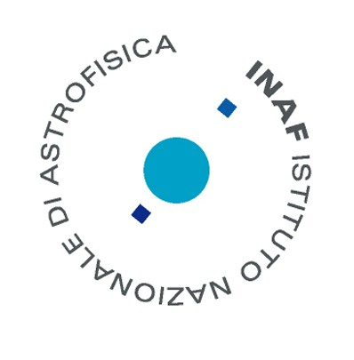
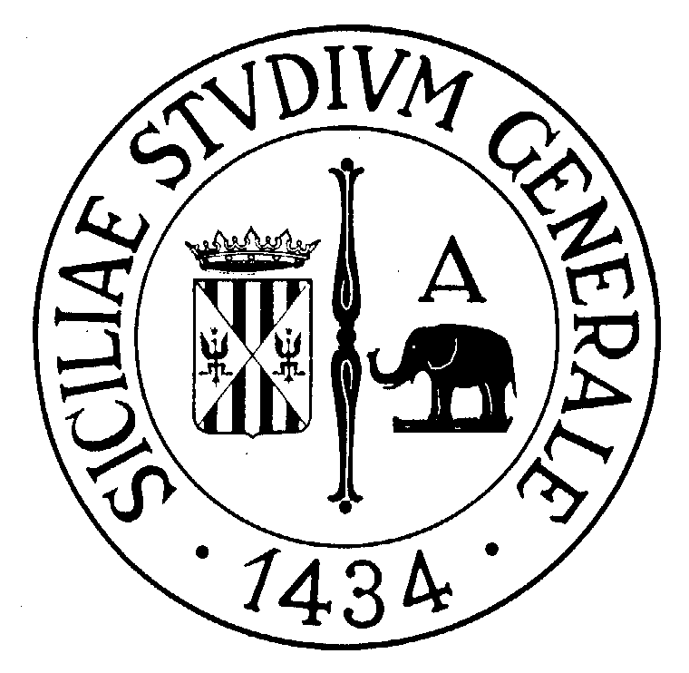
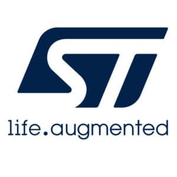
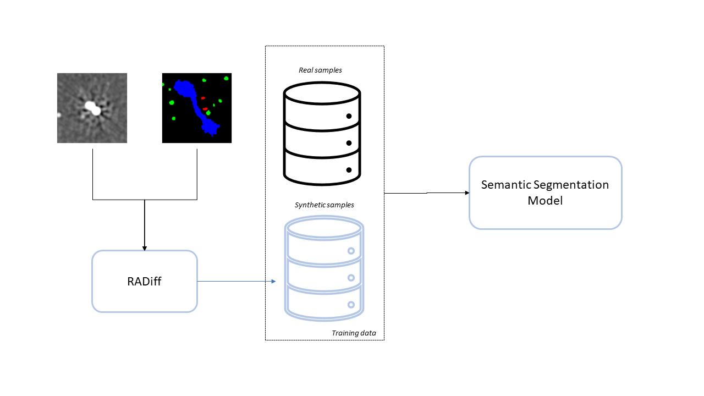
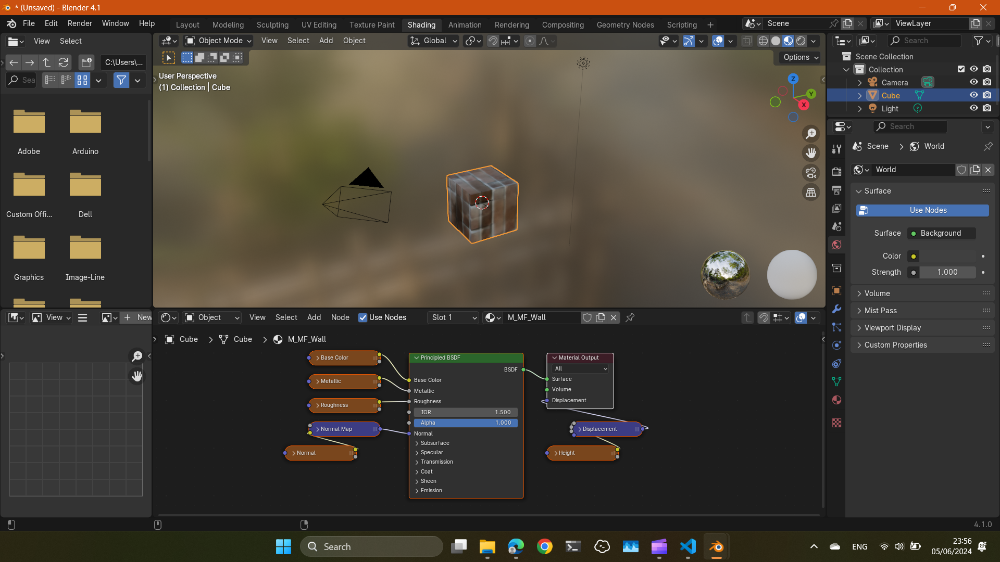
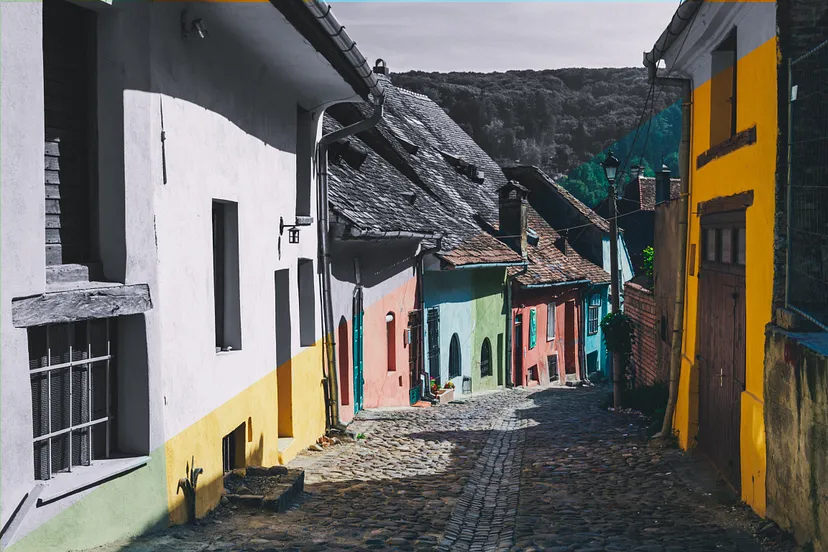

Experience
2024
Research Engineer
I am currently a Research Engineer at the CEA List, at the Laboratoire de Vision et Apprentissage (LVA).
I am exploring data pruning criterions on large‑scale datasets (∼1B images) for industrial vision tasks to reduce data storage cost for training machine learning models without losing performance.
2020 - 2024
Research Scientist

During my PhD, I collaborated with the Italian Institute of Astrophysics (INAF). Here, I worked on semantic segmentation approaches for object detection and segmentation in large radio frequency maps.
The main challenge of training deep models on radio frequency map is the risk of overfitting caused by the lack of annotated data. This led to the development of RADiff, a data augmentation method based on conditional diffusion model to alleviate the lack of annotated data and reduce overfitting of segmentation models.
2020 - 2023
Ph.D. in Computer Vision

I successfully defended my Ph.D. in Computer Vision at the University of Catania, at the PeRCeiVe Lab, under the supervision of Professor Concetto Spampinato.
My thesis focused on generative models conditioned on complex semantics for finely controllable image generation. My works involved a scene-graph to image model based on transformers, that used a graph transformer and an autoregressive decoder, and MatFuse, a diffusion model for PBR texture generation and editing for 3D graphics.
I also spent three months as a visiting student at the Insight Group at DCU under the supervision of Dr. Kevin McGuinness, where I worked on parallelizing the training of a transformer model on a distributed cluster using SLURM.
2023
Research Scientist, Intern
Interned as a Research Scientist at Datategy. Here, I Worked on fine-tuning an Vision Language Model (VLM) with Low Rank Adaptation (LoRA) for automatic e-commerce description generation from product images.
2019
Data Engineer, Intern

As a Data Engineer Intern at STMicroelectonics, I set up a pipeline for processing a stream of production log files from manufacturing. I used Elasticsearch and the Elastic stack to stream, filter, process, index, and visualize log files for fault detection in the production pipeline. I also set up an asynchronous message queue with Apache Kafka.
2018 - 2020
MSc in Computer Engineering
MSc in Computer Engineering at the University of Catania, focused on industrial informatics and automation, real-time systems, and advanced computer architectures.
Selected Publications


Transformer-Based Image Generation from Scene Graphs
Computer Vision and Image Understanding (Elsevier)

RADiff: Controllable Diffusion Models for Radio Astronomical Maps Generation
IEEE Transactions on Artificial Intelligence
Projects



ColorizeNet
ControlNet trained for image colorization task from Stable Diffusion v2.1

Radio Tiramisu
Tiramisu for semantic segmentation in radio astronomical images